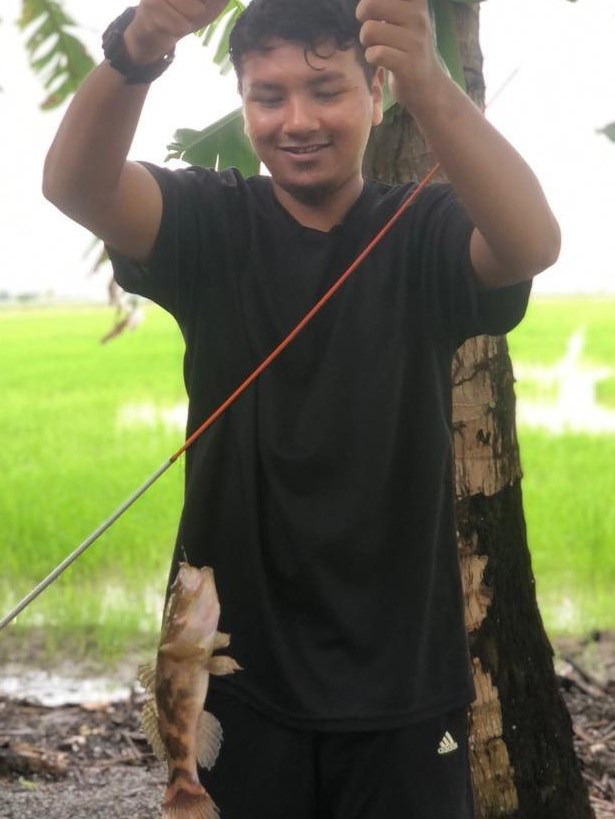
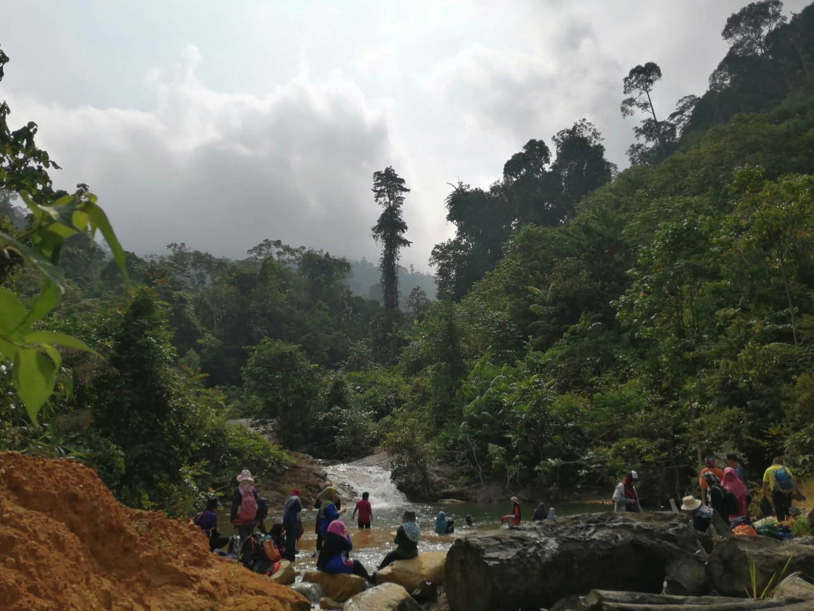

Hobby can be defined as an activity that someone does for pleasure when they are not working. My hobby at first was just fun. Without realizing it, sooner or later it became my main activity when I had free time🙂.
I often play badminton in my spare time. We usually play badminton at night. Badminton is a sport that challenges skills, especially reaction time skills. Playing badminton is not only healthy for the body, but it is also a medium to strengthen relationships with each other by meeting new friends.
 Since I was little, I often followed my father to go fishing. Unbeknownst to me, it has become a mandatory routine whenever there is free time. Fishing can build patience. In addition, fishing also requires knowledge, such as knowing the right time to fish.
 Hiking is my new hobby. It started when my friend invited me to climb Strata Falls. It is a challenging activity,especially when it rains because the track is slippery. In addition, it is necessary to be aware of the environment and be careful with wild animals.